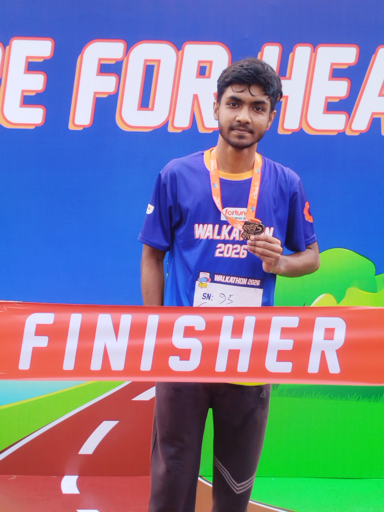

My First Walkathon
Fortune Rice Bran Oil Walkathon 2026.
Getting There
After my first running event, I was curious to try something different, and the Fortune Rice Bran Oil Walkathon 2026 at Hatirjheel Amphitheatre was the perfect chance. It was my first-ever walkathon, and I headed there excited to see how it would feel compared to a race.
What I Saw
The place was full of energy. People of every age came together to walk, stay active, and enjoy the morning as one community. A walkathon feels different from a race: there is less pressure and more smiling, chatting and sharing the moment with others.
Photo Gallery

My Experience
The Fortune Rice Bran Oil Walkathon 2026 was a refreshing and memorable experience. It let me enjoy the energetic atmosphere, stay active, and be part of a wonderful community event. This walkathon marked another exciting milestone in my journey of exploring new experiences and creating unforgettable memories. ❤️
My tip for anyone thinking about joining one: you do not need to be a runner. Come, walk at your own pace, enjoy the people around you, and take it all in.
← Back to all trips